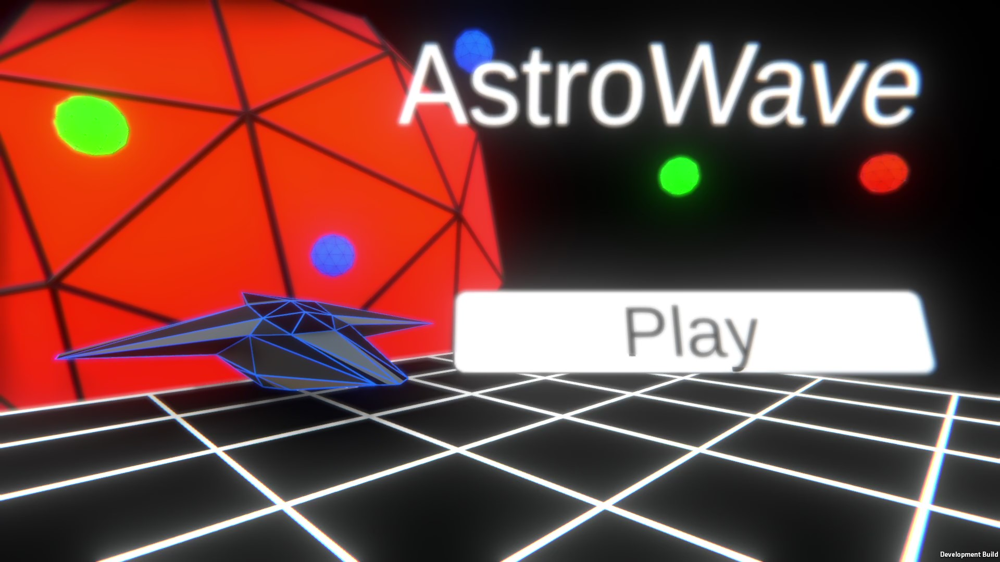
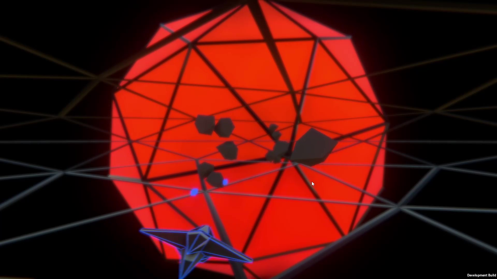

The AstroWave Backstory
The genesis of AstroWave emerged as an impromptu concept, initially divorced from any game development aspirations. In the latter part of 2021, my foray into 3D modeling led to the creation of the inaugural spacecraft, christened Astro. This model lay dormant on my computer throughout the initial months of 2022, fading into obscurity. As I undertook the task of decluttering my files, the Astro ship model resurfaced, triggering a spontaneous idea to integrate it into a gaming project. This nascent endeavor, tentatively labeled "SpaceFlyGame" (albeit a placeholder moniker), marked the inception of AstroWave V1. This initial iteration, in its embryonic state, bore stark simplicity compared to the more evolved V2, recognized by many today. AstroWave V1 underwent roughly three months of development before an unfortunate incident led to its accidental deletion from my computer's archives. Despite the setback, the essence of the project endured through the preserved Astro ship model. Undeterred by the setback, a decision was made to embark on the recreation of AstroWave from scratch. This undertaking was fueled by a dual commitment: to significantly elevate its quality and to align the development trajectory with my authentic vision for the game. The journey toward a refined and envisioned AstroWave experience became the focal point of this renewed development endeavor.
AstroWave V1
 AstroWave V2